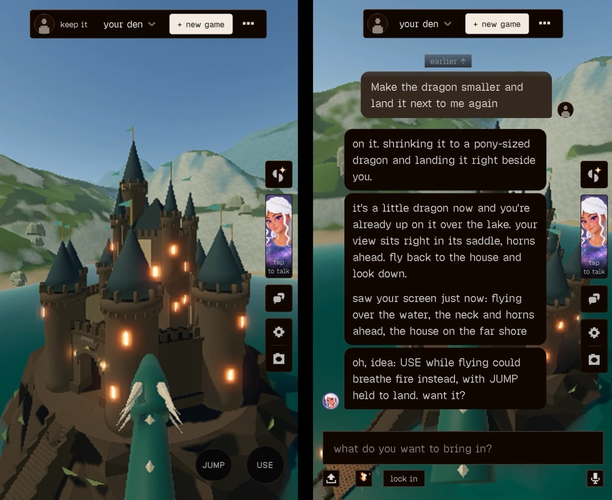
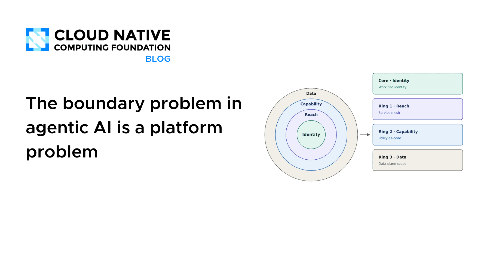
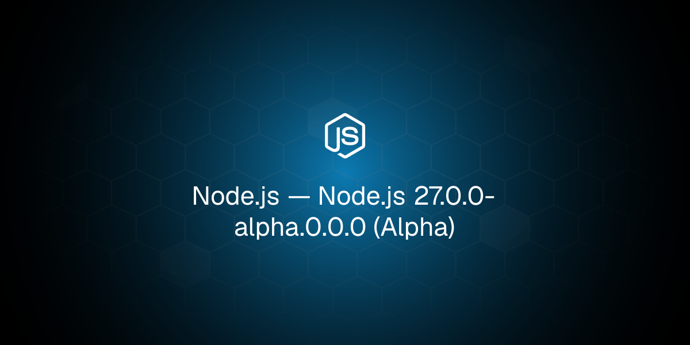
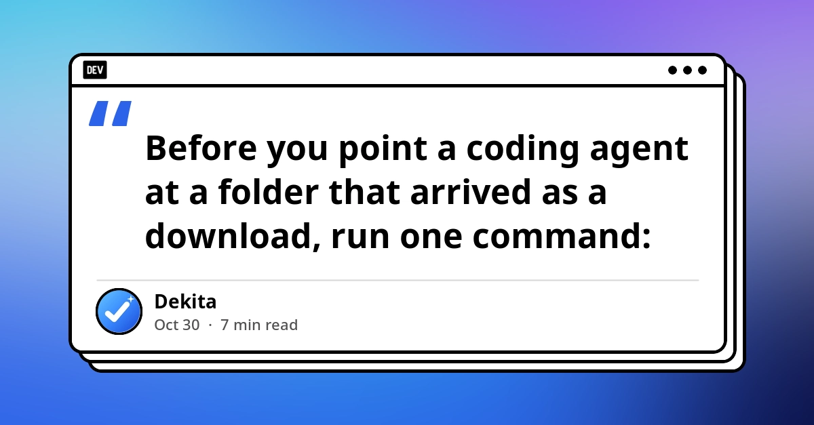
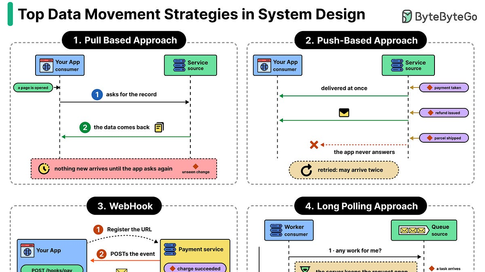
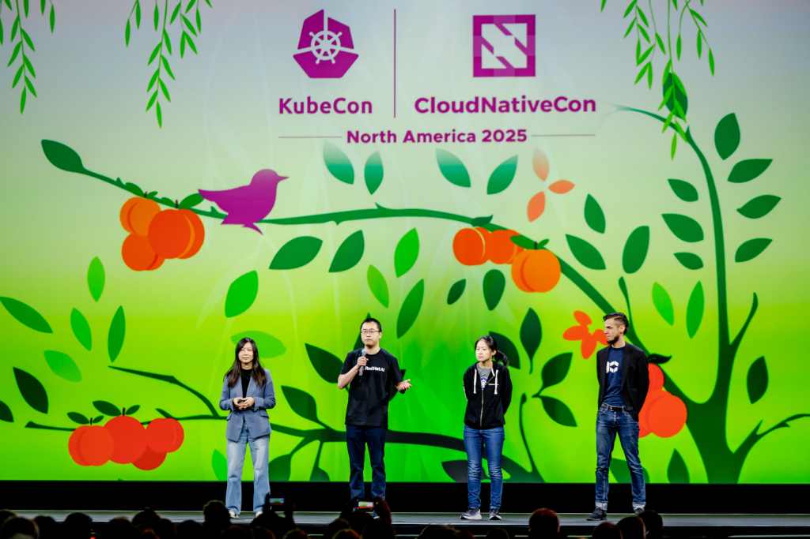
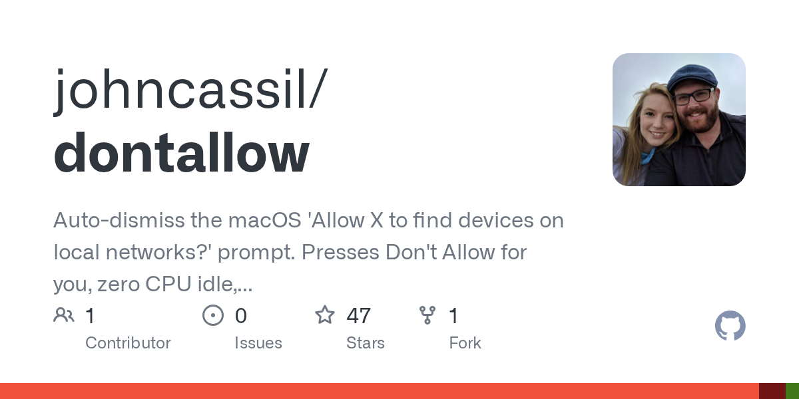
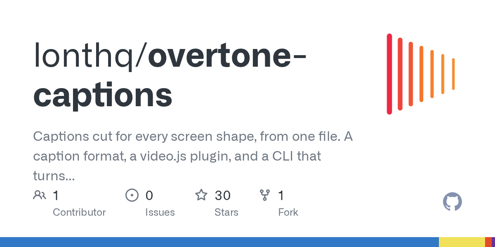
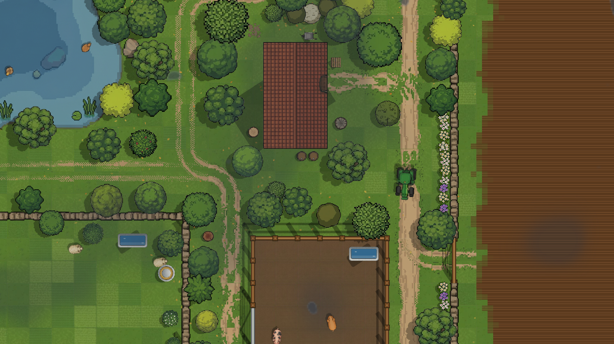
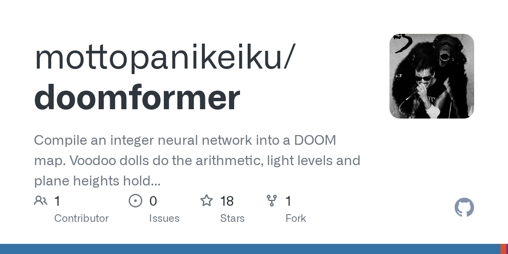

🔥 Top 3 (must read)
Claude Code regularly sends each background agent's transcript to its model
(HN discussion, 562 points / 226 comments) A gist looks at how Claude Code handles background agents and claims it regularly sends each agent's transcript back to its model. The HN thread is large and digs into what that means for how sub-agents share context and how much it costs. Why it matters: you run Claude Code with sub-agents daily. Knowing what actually gets sent, and when, changes how you split work across agents and how you read your token bills.

Building a multiplayer game world with autonomous Fable-class models
Simon Willison summarizes Jacob Sansbury's write-up on building Spawn, a massively multiplayer game environment where players build with prompts. The team runs agentic engineering against frontier models at a level most companies have not reached yet. Why it matters: as an EM adopting AI across a team, this is a concrete picture of what "all in" looks like in practice, including the trade-offs, not a vendor demo.

The boundary problem in agentic AI is a platform problem
CNCF argues that an agent will do exactly what its tools let it do, and no more, so the real risk sits in the tool set, not the prompt. The fix belongs in the platform layer (permissions, network boundaries, runtime limits), not in each agent's instructions. Why it matters: this maps directly to your infra and DevOps interest. If your team ships agents, this is the argument for owning the boundaries at the platform level.

🛠 Tools & releases
Node.js 27.0.0-alpha.0.0.0
first alpha of the Node 27 line. Not for production, but worth a look at what is changing before your backends need to move.

🤖 AI for developers
Your agent ran git. So did the repo: auditing repositories that arrive as files
before pointing a coding agent at a downloaded repo, check its local git config for
core.fsmonitor, core.hooksPath, attr.tree, or filter.* entries. These can run code the moment the agent touches git.
API credits benefit for eligible ChatGPT subscriptions
OpenAI now matches Anthropic's October move: eligible ChatGPT subscriptions get expiring API credits each month. Useful if you build on both APIs and want to use a subscription you already pay for.
S
👔 Engineering & teams
Data Movement Strategies in System Design
ByteByteGo on when and how data should travel inside a system and across its edges. A good shared vocabulary piece for design reviews.

From Working Group to SIG Architecture: spotlight on AI Conformance
how Kubernetes is standardizing what "runs AI workloads correctly" means, and why the effort moved from a working group into SIG Architecture.

🎯 For me
Claude Code background agents — the gist above is the day's most direct hit on how you already work. Read the thread before changing how you fan out agents.
Audit repos before agents touch them — the git config check is a one-line habit that fits straight into your team's agent-safety checklist.
Node 27 alpha — an early signal for your backend upgrade planning. Nothing to do yet except note the date.
💡 App ideas & indie builds
dontallow: Auto-dismiss the macOS "Allow <app> to find devices on local networks?" prompt
(HN, 105 points / 79 comments) — a tiny tool that kills one annoying system dialog. The problem: macOS asks the same permission question over and over. The lesson: a single sharp irritation, fixed well, draws a crowd. Look for the dialogs your own users curse at.

Overtone: Transcribe, correct and cut captions for any screen shape
(HN) — captions for creators who post the same video to vertical, square, and wide formats. The problem: captions that fit one aspect ratio break on another. A Flutter or web tool in this space is very buildable.

UK Farming Simulator
(HN, 42 points / 45 comments) — a browser farming game built around real UK farming rules and economics. The problem it serves: people want to understand a complex system (subsidies, seasons, prices) by playing with it. Simulation as explanation is a reusable pattern.

I Turned DOOM into a Transformer
(HN) — not a product, but a fun build: a transformer model that plays or generates DOOM. The inspiration here is the format. A weird, well-scoped weekend project with a clear demo gets attention and teaches you a stack.

🎓 Try this
Before your next coding-agent session on a repo you did not clone yourself, run the audit from the Dev.to piece:
```sh
git -C /path/to/repo config --local --list --show-origin
```
If you see
core.fsmonitor, core.hooksPath, attr.tree, or anything under filter.*, stop and read it before the agent runs any git command. Details in the article.